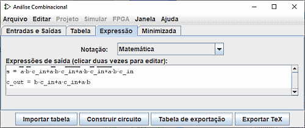
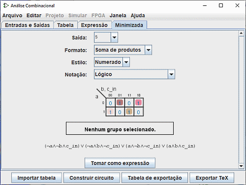

Criar expressões
Para cada variável de saída, a janela Análise Combinacional manterá duas estruturas - uma coluna correspondente na tabela-verdade, e uma expressão lógica - que especificará a forma como cada entrada se relacionará com a sua saída. Você poderá editar tanto a tabela-verdade ou a expressão, que isso mudará a outra automaticamente, conforme necessário, para mantê-las coerentes.
Como veremos a seguir, as expressões lógicas (ou booleanas) são particularmente úteis, pois a janela Análise Combinacional as usará quando for construir um circuito que corresponda ao estado atual.
Você poderá visualizar e editar as expressões usando as duas últimas guias da janela: a Expressão e a Minimizada.
A guia Expressão

A guia Expressão permite visualizar e editar as expressões correntes associadas a cada variável de saída. Possui um seletor Notação: e uma lista de expressões matemáticas para o circuito.
O selector Notação : altera o modo de notação das expressões de saída. Permite-lhe cinco tipos de notação :
- Matemática :
- A barra acima representa a negação, o - a função AND e o + a função OR.
- Lógico :
- O ¬ representa a negação, o ˄ a função AND e o ˅ a função OR
- Lógica Alternativa :
- O ~ representa a negação, o ˄ a função AND e o ˅ a função OR.
- Programação com booleans :
- O ! representa a negação, o && a função AND e o || a função OR.
- Programação com bits :
- O ~ representa a negação, o & a função AND e o | a função OR.
Note que sua tabela de verdade será irremediavelmente alterada se você editar as expressões e vice versae recipro.
Além dos sinais de multiplicação e adição em lugar das portas AND e OR, uma expressão poderá conter qualquer tipo de operadores lógicos em C/Java, bem como as próprias palavras (AND, OR, NOT).
| maior precedência: | ~ ! | NOT |
|---|---|---|
| (nada) & && | AND | |
| ^ | XOR | |
| menor precedência: | + | || | OR |
Os exemplos a seguir são representações válidas de uma mesma expressão. Você também poderá misturar os operadores.
| ~a (b + c) |
| !a && (b || c) |
| NOT a AND (b OR c) |
Em geral, os parênteses sobre uma sequência de ANDs (ou ORs ou XORs) não importam. (Em particular, se criar um circuito correspondente no Logisim, ele irá ignorá-los.)
A guia Minimizada (Minimized)

O último guia exibe a expressão mínima de uma das colunas da tabela da verdade. Neste painel são apresentados quatro selectores, a mesa karnaught e a expressão mínima.
Com o seletor superior Saida:, você pode selecionar a saída minimizada de uma coluna da tabela que você deseja exibir.
O seguinte selector <Formato: permite-lhe indicar se pretende produzir uma soma de produtos ou uma produtos de somas.
o selector Estilo: modifica a apresentação das variáveis nas margens da tabela. Seja com valores binários ou com linhas sobre valores verdadeiros

|
| Numerado |

|
| Forradas |
o selector Notação: tem a mesma propriedade do painel Expressão (ver acima)
Se houver quatro entradas ou menos, um mapa de Karnaugh correspondente à variável irá aparecer abaixo do seletor. Você poderá clicar no mapa de Karnaugh para alterar os valores na tabela-verdade. O mapa de Karnaugh também apresentará os termos selecionados para a expressão minimizada por meio de retângulos arredondados, sólidos, semitransparentes.
Embaixo estará a expressão minimizada, formatada como mostrado na guia Expressão (Expression). O Logisim usa o algoritmo de Quine-McCluskey para calcular a expressão minimizada. Isso é equivalente a um mapa de Karnaugh, mas se aplica a qualquer número de variáveis de entrada.
O botão Definir Como Expressão (Set As Expression) permitirá selecionar a expressão minimizada como aquela correspondente à variável. Isso geralmente não será necessário, já que editar a tabela-verdade resultará no uso da expressão minimizada para a coluna alterada, mas se você digitar uma expressão através da guia apropriada, esta também poderá ser uma maneira conveniente para se alterar a expressão minimizada correspondente.
Próximo: Gerar um circuito.